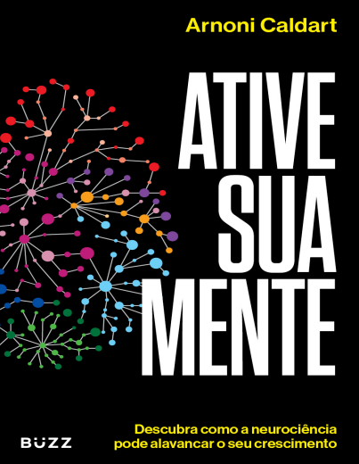
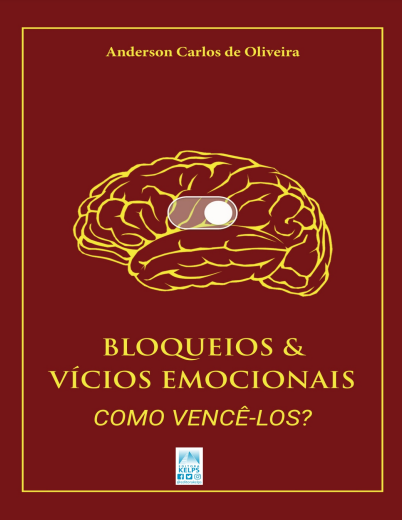
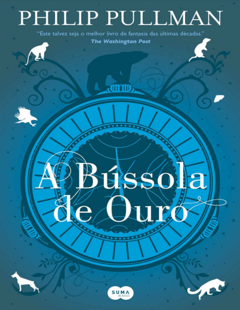
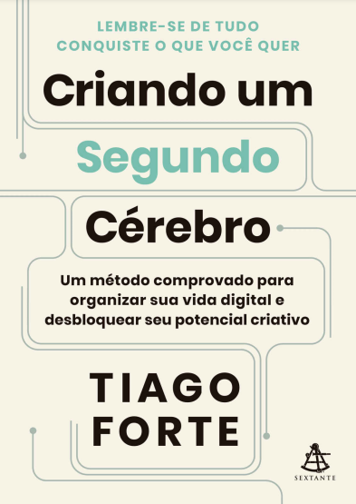
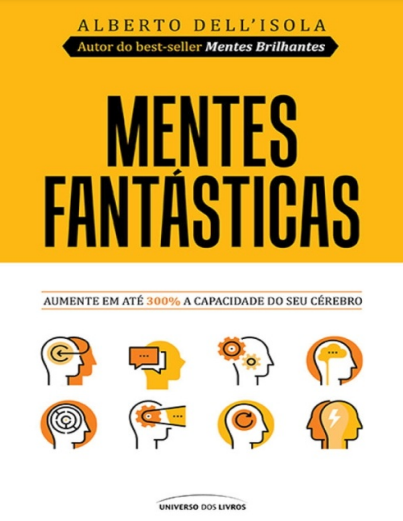
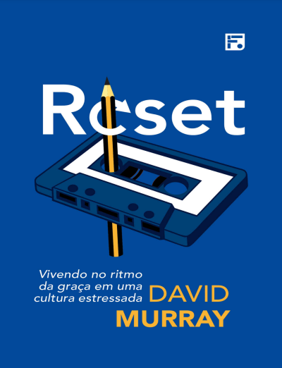
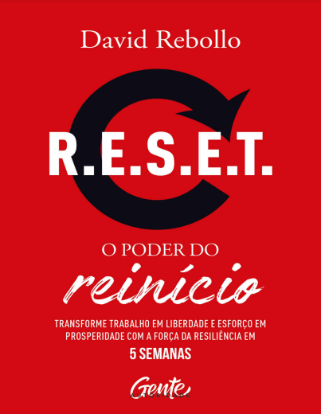
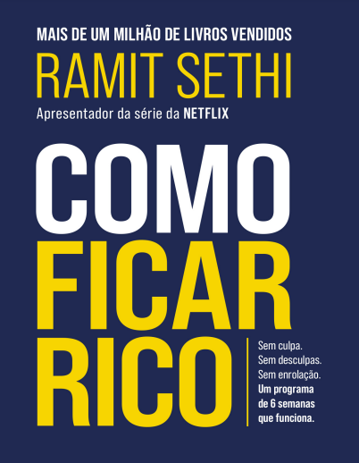

Oferta Exclusiva: Assine por R$ 25,00 e tenha acesso a 12 livros!
Saiba Mais
A Bíblia para o Milhão
Com quase 2 milhões de seguidores, o perfil Projeto Milhão vem ajudando através de um conteúdo exclusivo milhares de pessoas por mês a atingirem suas metas pessoais e profissionais.
O livro está dividido em 4 grandes partes e 30 principais capítulos, incluindo: os grandes segredos dos ricos, os hábitos que criam pessoas de sucesso, as principais ferramentas utilizadas por quem conquista muito dinheiro e como dar o primeiro passo rumo ao caminho das conquistas pessoais e profissionais.
Em A Arte de Ler Pessoas, iremos nos aprofundar na exploração da linguagem corporal não apenas para entender as pessoas - mas também para nos conectarmos com elas. Afinal, por que encontramos a necessidade de interpretar e entender o que as pessoas dizem e fazem?
O livro: Quem se comunica enriquece apresenta ferramentas conceituais e práticas para você extrair o máximo do potencial de seu cérebro. Falar bem depende de treino e mudança de comportamento. Você vai desenvolver uma nova percepção da realidade, aprender a influenciar pessoas e conquistar os resultados que deseja.
Com este livro você vai aprender, em apenas 29 minutos, a falar em público e a conversar com as pessoas de maneira segura e desembaraçada. Por que 29 e não 30 minutos ou uma hora? Simples: para que você saiba que as técnicas mais relevantes da comunicação podem ser aprendidas em menos de meia hora.
O Antiotário tem ensinamentos que demorariam anos para um homem comum aprender, você pode optar agora por aprender essas lições pelo amor ou pode preferir aprendê-las pela dor, “quebrando a cara” e com muito sofrimento. Garanto que a primeira opção é a melhor, porque a segunda pode trazer consequências negativas que te perseguirão ...
Impossível reunir em um livro tudo o que precisamos saber sobre psicanálise”. É esse o alerta que a psicanalista Silvia Ons faz ao leitor no prólogo deste livro. E não sem motivo. Tamanha é a complexidade do tema, que nem uma centena de livros dariam conta do “tudo”, mesmo porque, defende a autora, “tudo” não combina com a psicanálise. Lacan, cita ela, dizia que o analista deveria reinventar a psicanálise todos os dias. Mas isso não impediu a autora de reunir, neste volume, um compêndio bastante abrangente dos principais conceitos psicanalíticos, apresentados com grande clareza e síntese e contextualizados na história.
Como descobrir o seu poder, usá-lo a seu favor e ser uma pessoa a cada dia mais atraente. 100 lições para atrair relações produtivas e incríveis. De maneira simples você vai aprender nesse livro como ser ainda mais interessante. Especialmente no jogo do amor e das relações afetivas. Cada lição contém uma profunda reflexão para que você desenvolva habilidades integradas ao seu ser, para se tornar um imã positivo de amor, prosperidade, autoconfiança, amor próprio e autenticidade.
O receio de falhar, a preocupação de não ser aceito pelos ouvintes e a sensação de inferioridade torna o medo de falar em público um dos maiores temores entre os profissionais.
Muitos afirmam que as principais causas dos seus receios estão relacionadas a situações desfavoráveis passadas em
suas residências, escolas ou no ambiente de trabalho, sendo essas circunstâncias vexatórias que os colocaram desconfortáveis e sem confiança em si mesmos.
Como fazer amigos e influenciar pessoas" é um clássico escrito por Dale Carnegie, que oferece um guia prático sobre como estabelecer relacionamentos sólidos e influenciar positivamente as pessoas ao nosso redor. Publicado pela primeira vez em 1936, o livro continua sendo uma referência importante para aqueles que desejam aprimorar suas habilidades sociais e profissionais.
Após ser traído por seu irmão, Stefan resolve fugir para sempre dele e de qualquer contato humano. Mas Damon está disposto a tudo para arruinar os planos do irmão, e, ao contrário de Stefan, ele não se importa com quantos humanos vai ferir pelo caminho. No entanto, uma força maligna e muito mais antiga do que os dois vampiros parece ter voltado à Terra, e os sobreviventes da família Salvatore vão se ver obrigados a deixar as desavenças em segundo plano.
Um Anel que a todos rege, Um Anel para achá-los, Um Anel que a todos traz para a escuridão atá-los". O grande épico de J.R.R. Tolkien em volume único e capa especial da série do Prime Video.
Em Nós e a Bíblia, André Daniel Reinke investiga o fenômeno de como o mesmo texto bíblico pode ser interpretado de maneiras tão distintas e produzir culturas tão plurais.
O criador do Metaforando, o maior canal de linguagem corporal do mundo, mostra o passo a passo para entender melhor as pessoas ao seu redor e identificar incongruências entre expressões emocionais, discurso e comportamento. Você já teve a sensação de não ir com a cara de alguém sem saber o porquê?
R$ 10,00
O Poder do Foco - Louise Sallow
Este livro inclui várias instruções passo a passo para ajudar você com a visão, execução, definição de metas e comportamento do consumidor. Neste livro, você aprenderá conceitos básicos de execução de metas e você aprenderá as principais técnicas de forma direta e simplificada!
R$ 10,00
Harry Potter e a Pedra Filosofal
Harry Potter é um garoto cujos pais, feiticeiros, foram assassinados por um poderosíssimo bruxo quando ele ainda era um bebê. Ele foi levado, então, para a casa dos tios que nada tinham a ver com o sobrenatural. Pelo contrário. Até os 10 anos, Harry foi uma espécie de gata borralheira: maltratado pelos tios, herdava roupas velhas do primo gorducho, tinha óculos remendados e era tratado como um estorvo. No dia de seu aniversário de 11 anos, entretanto, ele parece deslizar por um buraco sem fundo, como o de Alice no país das maravilhas, que o conduz a um mundo mágico.
R$ 10,00
Gatilhos Mentais - Yasmin Fleming
Em busca da lealdade à marca, apelamos para as emoções que ela causa, desencadeando fantasias, imaginação e prazeres. Consumidores buscam experimentar sentimentos agradáveis. Nesse livro, conversaremos sobre as duas maneiras de influenciar o comportamento humano: manipulando ou inspirando.
R$ 10,00
Aprendendo a Aprender - Barbara Oakley
Neste livro, a Professora Barbara Oakley mostra como você pode aprender e aperfeiçoar-se muito mais fácil e rapidamente aplicando técnicas comprovadas pela pesquisa e usadas por peritos nos campos da arte, música, literatura, ciências, esportes e muitas outras disciplinas.
R$ 10,00
Seja sua melhor versão - Cécile Duret
Este livro é a sua oportunidade para desenvolver a sua mentalidade e as ações adequadas para criar os resultados que você sonha ver se tornar realidade. Lendo um capítulo por dia, você pode gerar um grande impacto na sua vida.
A cada dia, a autora compartilha técnicas, insights e exercícios práticos que transformaram a vida dela e convida você a aplicá-los e adotá-los como estilo de vida.
Você tem a oportunidade, com essa obra, de criar hábitos poderosos para desenvolver quem você realmente é, quem aspira ser e assim conquistar sua melhor versão!
R$ 10,00
Como Identificar um Psicopata - Daynes, Fellowes
Nem todos os psicopatas são assassinos compulsivos ou criminosos, como você pode pensar. Alguns, aparentemente, são pessoas comuns. Na verdade, 1% a 3% da população em geral tem fortes tendências psicopatas. Neste livro, a psicóloga forense Kerry Daynes explica como funciona a mente de um psicopata. Ela revela os traços de comportamento que os vários tipos de psicopata têm em comum e dá sugestões de como lidar com eles ou, melhor ainda, de como evitá-los a todo custo. Por meio de estudos de caso, este livro o ajudará a identificar os possíveis psicopatas em sua vida.
R$ 10,00
O Poder dos Quietos - Susan Cain
Com base em entrevistas e a compilação de diversas pesquisas, a autora nos mostra as diferenças dos introvertidos e extrovertidos em nossa sociedade. Ela também mostra que não é errado ser introvertido. Não é um problema. Não é uma patologia, por mais que nossa sociedade atual tente pregar isso a todo o momento.
R$ 10,00
O Poder do Foco - Canfield, Hansen e Hewitt
Em O PODER DO FOCO, analisam como pequenas mudanças, desvios ao longo do caminho, podem afetar o seu destino final. Por isso, é preciso focar toda atenção aos detalhes que compõem a rotina de cada um. O poder desse foco é o diferencial das pessoas bem-sucedidas. Elas são capazes de manter o que está correto em suas vidas e descartar o resto. Mudam hábitos equivocados e equilibram os lados pessoal e profissional, já que são as escolhas de cada dia que determinam se sua história será vivida na pobreza ou na abundância
R$ 10,00
Freud Sobre a Psicopatologia da Vida Cotidiana
Uma das obras mais acessíveis de Freud Não há teoria psicológica que já tenha conseguido prestar contas de maneira coerente do fenômeno fundamental do recordar e do esquecer. Sobre a psicopatologia da vida cotidiana, de Sigmund Freud (1856-1939), é, a um só tempo, uma das obras do autor mais acessíveis ao público leigo e um dos textos fundadores do método psicanalítico. Trata-se de uma coletânea de pequenas histórias que compõem uma amostra da presença do inconsciente em atos falhos do cotidiano de pessoas saudáveis: esquecimentos aparentemente sem razão, lapsos de fala, enganos e erros.
R$ 10,00
Nunca Deixe de Acreditar - Christina Rickardsson
Em "Nunca deixe de acreditar", Christina relata a história de sua vida como menina de rua no Brasil, da fome que passou, de como foi maltratada e da separação de sua mãe biológica e de seu país. Conta como foi crescer na Suécia com todos os choques culturais com os quais se deparou assim que chegou à pequena cidade localizada na região de Norrland. A autora revela sua experiência de sobrevivência, de como dois mundos totalmente diferentes contribuíram para a sua formação e de como lutou para unir as duas pessoas que tinha dentro de si mesma. Uma história real sobre amor, tristeza, amizade e perdas.
R$ 10,00
Amor Imenso - Penelope Ward
Quando um mal-entendido vira combustível para uma tórrida história de amor Desde garoto, Justin amava Amelia, que odiava Justin desde que ele se mudou para a casa vizinha à da sua avó, em Rhode Island. Não, nada disso. Amelia também amava Justin, mas um mal-entendido o fez pensar que a garota mais incrível do mundo não correspondia ao seu amor e, pior, o odiava. Os anos se seguiram, e os dois tomaram caminhos distintos até que o destino e um empurrãozinho de Nana, avó de Amelia os reuniu novamente na casa onde se conheceram quando eram adolescentes.
R$ 10,00
Armado Para o Combate - Rick Renner
Neste livro, Rick oferece um estudo detalhado da armadura romana, dando-nos assim uma visão singular do propósito da armadura espiritual na vida dos cristãos. Ele apresenta uma abordagem biblicamente sadia e estratégica para frustrar todos os ataques espirituais do maligno. As verdades contidas nestas páginas o ajudarão a descobrir tanto a sua capacidade quanto a sua responsabilidade de confirmar a derrota de Satanás no Calvário, a fim de cumprir o plano perfeito de Deus para sua vida.
R$ 10,00

Ative sua mente - Arnoni Ulisses Caldart
Em Ative sua mente: Descubra como a neurociência pode alavancar o seu crescimento , Arnoni mostra como tonificar o cérebro para que ele seja seu aliado e impulsione você para as escolhas certas. Ao contrário do que muitos pensam, esse órgão não é comandado apenas pelo instinto; as situações do dia a dia e as reações que temos a elas também influenciam nas tomadas de decisão. É por isso que é preciso exercitar a mente, para que seja possível contornar os contratempos da rotina com facilidade e rapidez, a fim de logo podermos voltar a nos concentrar em nosso propósito de vida.
R$ 10,00
Quando a Bela domou a Fera - Eloisa James
Eleito um dos dez melhores romances de 2011 pelo Library Journal, Quando a Bela domou a Fera é uma deliciosa releitura de um dos contos de fadas mais adorados de todos os tempos.
Piers Yelverton, o conde de Marchant, vive em um castelo no País de Gales, onde seu temperamento irascível acaba ferindo todos os que cruzam seu caminho. Além disso, segundo as más línguas, o defeito que ele tem na perna o deixou imune aos encantos de qualquer mulher.
R$ 10,00

Bloqueios e Vícios Emocionais - Anderson Carlos de Oliveira
Geralmente, quando se ouve falar em vícios, o primeiro pensamento é sobre a dependência de drogas ilícitas ou mesmo lícitas, como abuso de bebidas alcoólicas e cigarros. É necessário compreender que existem vícios emocionais e que estes são tão prejudiciais como qualquer outro (ou até mais), pois terminam causando bloqueios que impedem as pessoas de alcançar qualidade de vida nos âmbitos profissional, financeiro, amoroso, familiar etc.
R$ 10,00

A Bússola de Ouro - Philip Pullman
A Bússola de Ouro é um livro de fantasia escrito por Philip Pullman que conta a história de Lyra Belacqua, uma órfã que embarca em uma jornada para encontrar seu melhor amigo, Roger, que desapareceu:
O livro se passa em um mundo semelhante ao nosso, mas com algumas diferenças, como a existência de daemons, animais que se manifestam como a alma dos humanos.
R$ 10,00
Viagem ao Centro da Terra - Jules Verne
Em 1863, o impetuoso geólogo e mineralogista Otto Lidenbrock descobre uma mensagem cifrada em caracteres rúnicos descrevendo uma expedição ao interior do planeta. É o suficiente para o enérgico professor se lançar na mesma aventura, acompanhado de seu assistente e sobrinho Axel e do inabalável Hans, guia imprescindível para a empreitada.
Rios de lava, mares subterrâneos, os primórdios da vida no planeta, fauna e flora pré-históricos, múmias de homens primitivos... Embarque você também nessa fascinante e extraordinária Viagem ao centro da Terra!
R$ 10,00
O Ciclo da Autossabotagem - Rosner, Hermes
Um garoto de 12 anos, abandonado pelo pai, promete que nunca fará à sua futura família o que lhe foi feito. No entanto, 30 anos depois, o menino agora um homem deixa sua própria família. Uma jovem que rompeu um relacionamento abusivo agora é atraída pelo mesmo tipo de personalidade em um namorado em potencial. E um advogado que cresceu com um pai impossível de agradar aceita um emprego em uma empresa onde o chefe acha que elogios nunca são produtivos.
R$ 10,00

Criando um Segundo Cérebro - Tiago Forte
O objetivo deste livro é mudar a forma como lidamos com a informação. Com base nos mais recentes avanços no campo da Gestão do Conhecimento Pessoal, Tiago Forte ensinará você a: Guardar qualquer coisa que tenha aprendido, pensado ou acessado, podendo encontrar tudo em segundos, sem precisar recriar nada. Gastar menos tempo procurando algo e mais tempo trabalhando de maneira eficaz e criativa.
R$ 10,00
O Date Perfeito - Steve Bloom
Sobreviver ao último ano do ensino médio, fazer provas e mais provas e se preparar para a faculdade. Essas são só algumas das preocupações de Brooks Rattingan, um jovem de Nova Jersey que sonha em entrar em Columbia. Porém, realizar seu sonho não será nada fácil: Brooks está longe de ter o dinheiro necessário para pagar o alto custo de se manter em uma universidade de elite.
R$ 10,00
Faça o tempo enriquecer você - Tathiane Deândhela
Tathiane Deândhela, especialista em produtividade, desenvolveu um método capaz de fazer qualquer profissional ter mais resultado gastando menos energia. Existe uma estratégia para driblar tudo o que rouba o seu tempo, para que seja mais objetivo em suas atividades, realize seus objetivos de vida e conquiste um posicionamento poderoso no circuito profissional, conciliando produtividade e dinheiro com ferramentas práticas e personalizadas.
R$ 10,00
Inteligência do Carisma - Heni Ozi Cukier
Aprenda a conquistar, cativar, motivar e ser querido e respeitado. Neste livro, o cientista político Heni Ozi Cukier faz um retrato fascinante sobre a história do carisma: desde os nossos antepassados que seguiam o líder nas caçadas (e nem sempre o líder era o mais forte fisicamente), passando pela Grécia Antiga, o Império Romano, as cartas de São Paulo durante a expansão da Igreja Católica, o Renascimento até os dias de hoje.
R$ 10,00
Invocadores do Mal - Wicks, Warren
A médium clarividente Lorraine Warren e seu marido, o respeitado demonologista Ed Warren, estudaram, por mais de meio século, fenômenos paranormais ao redor do mundo. Seus casos inspiraram os filmes Invocação do Mal, Amityville e Annabelle. Esta obra reúne as cinco décadas de experiência em investigação de campo desse casal, juntamente com as suas perspectivas histórica, científica e religiosa, para revelar que até mesmo o que é considerado paranormal não pode ser ignorado, tem padrões de comportamento previsíveis e pode ser mensurado cientificamente.
R$ 10,00
Menina má - R.S. Grey
Recebi um aviso: fique longe de Ben Rosenberg.
Como o “rei” de Clifton Cover, ele pensa que tem direito a ter o que quiser, incluindo pessoas.
O problema é que passei minha vida inteira seguindo as regras à risca e vivendo em uma zona de conforto. Eu sei o que é ser uma boa menina. Sou filha do chefe de polícia e bibliotecária – da área infantil, para crianças adoráveis.
Uma noite inteira com um pedaço de mau caminho vindo diretamente de um romance era algo muito excitante de se pensar somente, até o dia em que o destino decide ficar com pena de mim e me jogar na frente do Sr. Fora dos Limites.
R$ 10,00

Mentes fantásticas - Alberto Dell'isola
No novo livro de Alberto Dell'Isola, mesmo autor de Mentes Brilhantes e Mentes Geniais, você vai descobrir que é possível utilizar induções simples e inovadoras para alcançar os objetivos que tanto almeja,sejam eles aumentar a capacidade do seu cérebro, superar as adversidades, ler mentes, detectar mentiras ou ainda no tratamento contra a insônia ou o vício em cigarro.Com uma linguagem simples e trazendo rotinas e diretrizes para quem deseja praticar a hipnose, a auto-hipnose e o mentalismo, você descobrirá seus usos no dia a dia e porque sua mente é sua melhor aliada rumo ao sucesso.
R$ 10,00
Como mudar - Katy Milkman
Por meio de estudos de caso, histórias envolventes e exemplos de pesquisa de ponta, a premiada cientista comportamental Katy Milkman nos mostra como identificar e superar as barreiras que muitas vezes nos impedem de mudar.
Todos nós já ouvimos conselhos sobre como adotar bons hábitos. Como mudar explica por que eles na maioria das vezes não funcionam.
R$ 10,00
Peter Pan & Wendy
Wendy Darling não tem certeza se está pronta para crescer. Crescer significa que acabaram suas noites no quarto das crianças, compartilhando histórias sobre o heroico Peter Pan com seus irmãos mais novos, João e Miguel. Então, para a surpresa de Wendy, o próprio Peter Pan aparece, ao lado de sua companheira, a fada Tinker Bell — e a dupla leva as crianças para a Terra do Nunca, um lugar mágico onde ninguém precisa crescer. Ao chegarem à Terra do Nunca, as crianças mergulham de cabeça em uma aventura, encontrando o rival de Peter, o Capitão Gancho, e sua perigosa tripulação pirata.
R$ 10,00
O que sobra - Príncipe Harry
Esta foi uma das imagens mais tocantes do século XX: dois jovens, dois príncipes, caminhando atrás do caixão da mãe, enquanto o mundo acompanhava os eventos com tristeza ― e horror. Conforme Diana, a Princesa de Gales, era sepultada, bilhões de pessoas se perguntavam como se sentiam, e o que pensavam, os príncipes ― e como a vida deles iria se desenrolar a partir daquele momento.
Para Harry, esta é enfim a sua história.
R$ 10,00
Malévola: o coração da rainha - Holly Black
Ao coroar Aurora, Malévola não sabia que estava colocando-a em perigo. Governar um reino é desafiador. Mas na cabeça de Aurora ― rainha de Perceforest e dos Moors ― pesam duas coroas. Encurralada pelos preconceitos que dividem o seu reino e ansiosa para estabelecer uma paz duradoura, Aurora está determinada a assinar um acordo de unificação entre os humanos e o Povo das Fadas. No entanto, à medida que flores escuras e espinhosas crescem nas fronteiras de Perceforest e um jovem ajudante desaparece de maneira misteriosa, a tensão entre humanos e fadas chega a um nível perigoso.
R$ 10,00
As regras para namorar - Penelope Ward & Vi Keeland
Tudo começou quando dei uma festa para algumas novas amigas. Porém, amigas talvez não fosse a palavra certa, já que as convidadas eram todas as mulheres com quem meu namorado andava conversando pelas minhas costas. Quando o convidado de honra chegou que agora era meu ex , as coisas ficaram interessantes Infelizmente, um estranho testemunhou toda a confusão. Eu estava de péssimo humor naquela noite e acabei descontando nele também. Como se a minha noite não pudesse ficar pior, antes de ir embora, aquele cara lindo me informou que era, na verdade, meu senhorio.
R$ 10,00

Reset: vivendo no ritmo da graça em uma cultura estressada
Este livro oferece uma boa notícia para quem está vivendo estressado. Deus mesmo, em sua graça, provê meios para os homens apertarem o botão de “reset” de suas vidas. A partir de sua vasta experiência no campo do aconselhamento e até de suas próprias lutas pessoais, o Dr. David Murray oferece a homens cansados uma esperança para o presente e o futuro, ajudando-os a identificar sinais de estresse e oferecendo ajuda e estratégias práticas para que vivam no ritmo da graça e consigam recuperar a alegria e a leveza da vida cristã.
R$ 10,00

R.E.S.E.T.: o poder do reinício - David Rebollo
R.E.S.E.T. é um caminho prático para realizar seus projetos com chances maiores de sucesso e prosperidade.” - David Rebollo R.E.S.E.T. é a virtude do empoderamento, com inteligência, estratégia emocional e lógica para se reestruturar em uma nova realidade competitiva. […] É um caminho prático para realizar seus projetos com chances maiores de sucesso e prosperidade.A partir da própria experiência profissional como líder de grandes empresas em diferentes lugares do mundo, em R.E.S.E.T.: O poder do reinício, David Rebollo oferece estratégias desenvolvidas para recomeçar um projeto profissional ou pessoal.
R$ 10,00

Como ficar rico - Ramit Sethi
Este não é o típico livro de finanças que você vê por aí. Chamado de “mago da riqueza” pela Forbes e “novo guru” pela Fortune , apresentador da série Como ficar rico , da Netflix, Ramit Sethi criou um sistema de seis semanas para você alcançar suas metas.
Esqueça essa história de anotar cada real gasto ou eliminar o cafezinho. Para ele, o primeiro passo é definir prioridades, isto é, entender o que é uma vida rica para você. Sustentar seus pais? Gastar tudo em sapatos? Viajar três vezes por ano? A escolha é sua. Em resumo: ele quer que você gaste seu dinheiro com o que ama. E corte custos em tudo o que não ama.
R$ 10,00
Seja Homem - Telmo Martinelo
Seja homem não é um manual de regras e passos para que um homem alcance a perfeição, mas um convite para que homens comuns e imperfeitos possam se aproximar de um Deus perfeito e, assim, serem reposicionados em seu devido e divino lugar e destino. Neste livro, Telmo Martinello aborda temas importantes sobre como crescer e desenvolver-se para se tornar encorajado a assumir a posição de homem perante a família, a igreja e a sociedade.
R$ 10,00
O Senhor dos Anéis - J. R. R. Tolkien
O Senhor dos Anéis (The Lord of the Rings) é um romance de fantasia criado pelo escritor, professor e filólogo britânico J.R.R. Tolkien. A história começa como seqüência de um livro anterior de Tolkien, O Hobbit (The Hobbit), e logo se desenvolve numa história muito maior. Foi escrito entre 1937 e 1949, com muitas partes criadas durante a Segunda Guerra Mundial. Embora Tolkien tenha planejado realizá-lo em volume único, foi originalmente publicado em três volumes entre 1954 e 1955, e foi assim, em três volumes, que se tornou popular. Desde então foi reimpresso várias vezes e foi traduzido para mais de 40 línguas, tornando-se um dos trabalhos mais populares da literatura do século XX.
R$ 10,00
A serpente e as asas feitas de noite - Carissa Broadbent
Para humanos e vampiros, as regras são as mesmas: nunca confie em ninguém, nunca ceda e sempre — sempre — proteja seu coração. A serpente e as asas feitas de noite é sucesso no TikTok e o primeiro volume da duologia Nascidos da noite, a saga inicial de Coroas de Nyaxia, uma romantasia repleta de magia das sombras, intrigas e romances perigosos.
Oraya é a filha adotiva do rei dos vampiros Nascidos da Noite. Humana em meio a predadores naturais, ela passou a vida lutando em um mundo que desafia sua existência. A única chance que tem de sobreviver é vencendo o Kejari, um lendário torneio promovido pela própria deusa da morte
R$ 10,00
Como ser tudo o que você quiser - Emilie Wapnick
Como ser tudo o que você quiser é para você que se identifica com muitas áreas e tem muitas paixões. Ter muitos projetos e curiosidades em campos diferentes não faz de você um "pau para toda obra". E não significa que você não tem foco. Na verdade, você é um multipotencialista: alguém com muitos interesses. E essa é sua maior força.
Este livro irá lhe mostrar como projetar uma vida – em qualquer idade e estágio da sua carreira – que permitirá encontrar o tipo de trabalho para amar. Afinal, você pode ser tudo o que quiser.
R$ 10,00
Vidas secas - Graciliano Ramos
Vidas Secas é um romance de Graciliano Ramos publicado em 1938 que narra a vida de uma família de retirantes no sertão nordestino. A obra retrata a miséria e as dificuldades enfrentadas por eles, que precisam se deslocar constantemente para áreas menos afetadas pela seca.
A história se desenrola em torno de Fabiano e sua família, que vivem em condições precárias e são obrigados a fugir da seca.
R$ 10,00
Opções de Compra
Compra Individual
Adquira apenas o livro que desejar. Ideal para quem quer algo específico.
R$ 10,00 por livro
Acesso Completo
Escolha um livro e tenha acesso imediato a mais 11 livros exclusivos para leitura e download. Após o acesso inicial, você pode renovar quando quiser por apenas R$ 25,00 e desbloquear novos livros a cada renovação!
R$ 25,00
Assinatura Mensal
Assine e tenha acesso a um catálogo crescente de livros por apenas R$ 35,00 mensais. Ideal para quem busca diversidade e atualização constante.